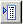

Display construction and reference geometry in a drawing view
-
On the Display tab in the Drawing View Properties dialog box, click the Parts List Options button

. -
Select one or more of the following, depending on what you want to display in the drawing view:
-
List All—Shows all available construction and reference geometry in the view.
-
List Constructions—Shows all construction elements (such as lines, points, curves, and surfaces) that were used to sketch and constrain the model.
-
List Coordinate Systems—Shows all base and user defined coordinate systems used in the model.
-
List Sketches
-
List Reference Planes
-
List Centerlines
The selected reference geometry is added to the Parts List.
-
-
In the Parts List section, highlight a construction or reference element that you want to display in the drawing view, and select the Show check box.
-
Update the drawing view.
The reference geometry is displayed.
-
Sketches are valid geometry with which to place 3D dimensions in pictorial views.
-
By default, reference planes and sketches use the Visible Edge and Hidden Edge line styles on the Edge Display tab of the Options dialog box. You can change the edge styles of reference planes and sketches with the Display tab of the Drawing View Properties dialog box.
-
If you list coordinate systems for a model on which mass properties have been calculated, a center-of-mass coordinate system is available for display in the Parts List.